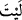
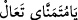

Onun için cehennem kapısına kilit vurmaya gerek yoktur
Câmî der ki:
Padişahlara mahsus atlas elbise içinde Allah’a kavuşmayı umma
Aşkın diktiği yırtık elbise altında gizli olan Hak dostları ancak vuslata erer
Beşer neslinin âdeti olmak üzere, İsrâiloğullarından zenginliğe ve geniş mal ve mülke
tamahkâr olanlar, dünya hayatını arzulayanlar dediler ki:
“Keşke Kârûn’a verilenin benzeri bizim de olsaydı;” Yani, ey kavim, keşke Karun’a
verilen maldan bizim de olsaydı, bize de verilseydi.
Denilmiştir ki: “__WORD__ (keşke)” diye çokça kullanılan bu kelimenin asıl anlamı “__WORD__ (Ey benim yüksek temennî ve arzum, gerçekleş artık!)” mânâsınadır. Araplar
bunu, hasedden sakınmak için o şeyin aynısını değil de başka bir benzerini temennî
ettikleri zaman kullanırlar. Bu ifâdeden anlaşıldığına göre, bu sözü söyleyenler
mü’minlerden bir gruptur.
“Doğrusu o çok şanslı! Dünyadan yana bol nasip sâhibi “dediler.”
Râğıb der ki: “__WORD__ (pay)”, mukadder nasip demektir. Bu cümle, temennî cümlesinin
bir illeti ve onun bir te’kididir.
Keşfü’l-esrâr’da der ki: Bu âyetin faydası şudur: Âlemlerin Rabbi bize, müminin çok
mal yüzünden tuğyana sebep olacak bir şeyi temennî etmemesi gerektiğini bildiriyor.
Bundan dolayıdır ki Allah Teâlâ “Hayır, insan kendini yeterli gördüğü için mutlaka
azgınlık eder” (Alâk, 96/6-7) buyurdu.
Belki Allah Teâlâ’dan, dünyada geçimi için yetecek miktarda istemek gerekir. Nitekim
hadislerde şöyle buyrulur:
“__WORD__ (Allah’ım! Muhammed’in âlinin rızkını yeterli kıl)”,[146] “__WORD__ __WORD__ (Allah’ım! Kim beni severse onu
iffetli kıl ve yeterli rızka kavuştur. Kim de benden buğzederse onu da mal ve çocukla
rızıklandır)”,[147] “__WORD__(İslâm’la şereflenip
yeterli rızka eren ve bununla da kanâat eden kimseye müjdeler olsun!)” [148]
Hâfız der ki:
Altın hazinesi olmasa da kanâat hazinesi mevcûddur
Onu şahlara verdi, bunu ise dilencilere
Dedi ki:
Senin gibi bir devlet kuşu, ne vakte dek kemik hırsına düşecek?
Ehil olmayanların üstüne saldığın devlet gölgesine yazık!